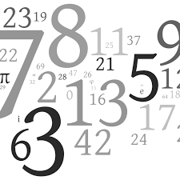

O mistério dos números primos
29 de Setembro de 2025
Segundo a teoria fundamental da aritmética, todo número natural e positivo acima de 1 pode ser descrito como o produto de valores primos. Isso é super importante, pois faz esses valores funcionarem como sendo uma espécie de átomos da matemática! Mas bem... Qual a origem desses valores? Quais são todos esses valores? Existe uma fórmula para identificar esses números? Bem... a resposta é não! Não só não temos nenhuma fórmula que alcance este objetivo, como também nem sabemos se isso é possível! Não atoa ,por exemplo, toda a criptografia atual é baseada nisso. Se alguém acabar desvendando esse mistério, poderia quebrar toda nossa segurança digital somente se baseando nos números primos. Loucura, né?!
Caso você, leitor, queira se aprofundar mais nestes conteúdos, basta pesquisar por um desses tópicos:
- números primos
- teorema fundamental da álgebra
- criptografia e sua relação com os primos
Ou você poder clicar em algum desses links!!
* Site sobre números primos
* Site sobre a relação entre primos e criptografia
A matemática na natureza
29 de Setembto de 2025
Você sabia que tudo a nossa volta tem matemática escondida por trás? Isso mesmo, pequeno curioso! Podemos dizer que a matemática, os números, a álgebra, aritmética, funções, enfim, tudo isso aparece de forma bastante significativa na natureza. Lindo, não?
Os tópicos mais interessante, na minha opinião, sobre esse tema são:
- fractais
- Sequência de Fibonacci e Número de Ouro
- Geometria
- Simetria
Os fractais são padrões que se repetem em diferentes escalas, criando complexidade a partir de uma regra simples. Exemplos incluem a ramificação de árvores e neurônios, a forma de samambaias e o sistema circulatório.
A sequência de Fibonacci (0, 1, 1, 2, 3, 5, 8, 13...) aparece na natureza para maximizar a eficiência e o equilíbrio.
A geometria não podderia estar de fora! O hexágono é a forma mais eficiente para preencher um espaço sem deixar vazios, sendo a estrutura ideal para favos de mel e cristais.
A simetria bilateral (divisão em duas partes iguais) em animais ou a simetria radial em algumas flores e na estrutura de estrelas do mar são exemplos de padrões visíveis!
Se quiser saber mais sobre esses tópicos, vale a pena visitar:
* Padrões matemáticos na natureza
* Série de Fibonacci e outros padrões
